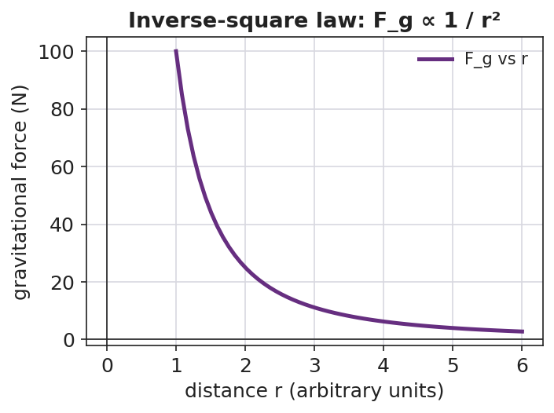
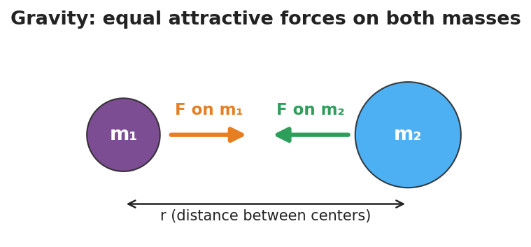

Unit: Forces — Lesson 06: Universal Gravitation
Phenomenon
Earth's gravity reaches all the way out to the Moon — it is exactly what holds the Moon in orbit. Yet the Moon never falls down onto Earth, and astronauts circling Earth float as if there were no gravity at all.
Gravity clearly reaches into space. So why doesn't the Moon just fall — and what makes that pull stronger or weaker?
Driving Question
What decides how strongly two objects pull on each other through gravity?
Notice & Wonder
Look at the Moon's orbit and the floating astronauts. Write two things you notice and two things you wonder. Use the word distance in at least one line.
Initial Model
Draw two spheres. Draw an arrow showing the pull each sphere feels from the other. Then predict: if you make one sphere heavier, what happens to the arrows? If you move them farther apart, what happens?
Investigate
Two masses attract each other. Drag the separation slider and watch the force arrows grow and shrink. The force follows the inverse-square law: Fg = G·m₁·m₂/r². Double the distance and the force drops to one-quarter, not one-half. Triple it and the force drops to one-ninth. Notice the two arrows are always equal in size and opposite in direction, no matter how different the masses (a Newton's-Third-Law cameo).
Fg ∝ 1/r² → relative force = 100% of the baseline (the two pulls are always equal and opposite).
The force falls off steeply — not linearly — as distance grows. That steep curve is the inverse-square law:

And no matter how different the two masses, the pulls are equal in size and opposite in direction:

Make It Make Sense
- Two objects pull on each other with a force of 12 N. Their masses stay the same, but you double the distance between them. What is the new force?
- Your mass is the same on Earth and on the Moon, but you would weigh about 1/6 as much on the Moon. Explain how both statements can be true.
- Earth pulls on the Moon. Does the Moon pull back on Earth? Is that pull bigger, smaller, or equal? Explain.
Stuck? Sentence frame
"When the distance doubles, the gravitational force becomes ___ because the distance is ___ in the formula."
Key Vocabulary (max 3)
- gravitational force — the attractive force every mass exerts on every other mass; near Earth's surface it is what we call weight (Fg = mg)
- inverse-square law — the pattern in which a force shrinks with the square of the distance, so doubling the distance divides the force by four
- mass — the unchanging amount of matter in an object (in kilograms), which sets how strongly it gravitates and is not the same as weight
Revise Your Model
Return to your two-spheres drawing. Rewrite your prediction about distance using the words inverse-square law — be specific about what happens to the force when distance doubles. Then complete this Because / But / So sentence:
"The gravitational force depends on the masses because ___, but it depends even more sharply on distance because ___, so ___."
Return to the Phenomenon
Why don't astronauts in orbit fall to Earth, even though Earth's gravity still pulls them? Answer in one sentence using gravitational force and inverse-square law: gravity still acts on them, but they are in continuous free fall — moving sideways fast enough that they keep "missing" Earth, so they circle it and float.
Exit Ticket + Closing Reflection
- Two satellites pull on each other with a gravitational force of 8 N.
(a) Their masses stay the same, but the distance between them doubles. What is the new force? Show your reasoning. (b) Is the amount of matter (mass) in each satellite changed by moving them apart? Explain. - Reflection: What is one thing today that changed how you think about gravity or weight? Who helped you make sense of it?